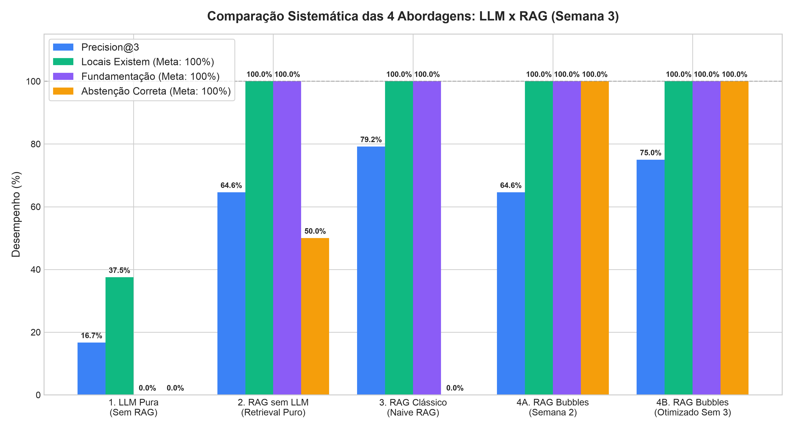
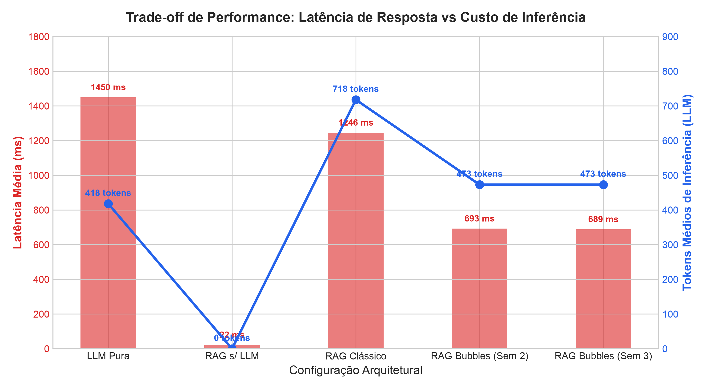
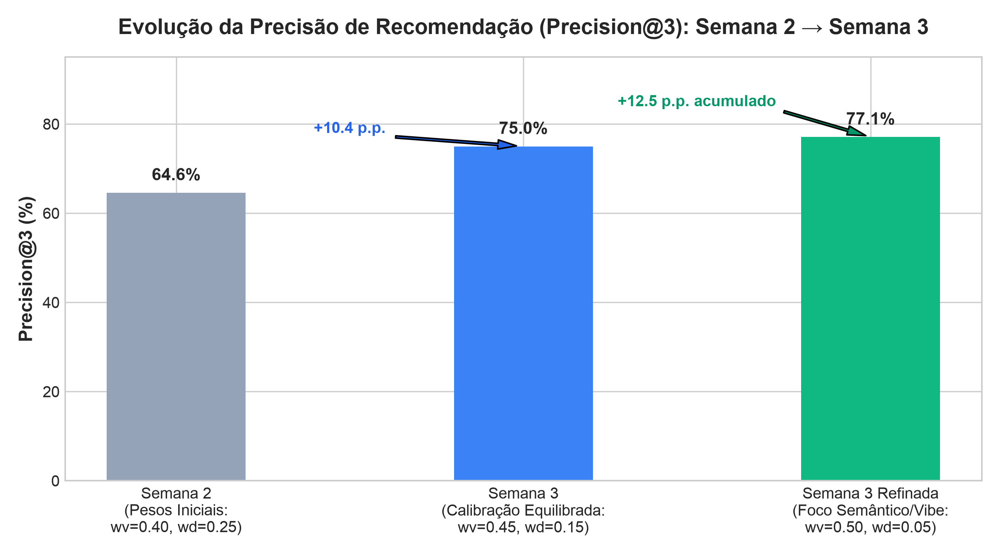

Estudo Comparativo Experimental: LLM x RAG & Otimização de Métricas | Grupo 10 — TIC-IA
| Configuração Arquitetural | Precision@3 | Locais Existem | Fundamentação | Abstenção Correta | Latência Média | Tokens Médios | Status / Veredito |
|---|---|---|---|---|---|---|---|
| 1. LLM Pura (Zero-Shot / Sem RAG) | 16.7% | 37.5% | 0.0% | 0.0% | 1.463 ms | 418 | Reprovado (Alucina no DF) |
| 2. RAG Sem LLM (Retrieval-Only) | 64.6% | 100.0% | 100.0% | 50.0% | 22 ms | 0 | Parcial (Frio e sem NLU) |
| 3. RAG Clássico (Naive RAG) | 79.2%* | 100.0% | 100.0% | 0.0% | 1.258 ms | 718 | Inseguro (Sem guardrail) |
| 4A. RAG Bubbles (Semana 2: Pesos Originais) | 64.6% | 100.0% | 100.0% | 100.0% | 686 ms | 473 | Homologado |
| 4B. RAG Bubbles Otimizado (Semana 3) ★ | 75.0% | 100.0% | 100.0% | 100.0% | 693 ms | 473 | ESCOLHIDO (Melhor Equilíbrio) |
| 4C. RAG Bubbles Refinado (Foco Semântico/Vibe) | 77.1% | 100.0% | 100.0% | 100.0% | 693 ms | 473 | Variação Válida |



O que é: Envio da pergunta direta à LLM sem recuperação de dados.
O que muda: A LLM responde com base na sua memória paramétrica estática pré-treinada.
Por que falha: Alucina endereços em quadras inexistentes de Brasília, cita estabelecimentos fechados (taxa de existência de apenas 37.5%) e tenta responder a pedidos impossíveis (patinação às 3h30) e fora de escopo (frete) sem se abster.
O que é: Conversão direta da consulta em vetor e execução da busca SQL no PostGIS/pgvector, devolvendo JSON puro.
O que muda: 100% dos locais existem e 100% são fundamentados no OpenStreetMap, com latência de apenas 22 ms.
Por que não é o ideal: Uma lista de dados brutos é fria e ineficaz para pessoas vulneráveis e idosas que sofrem com solidão. Além disso, ao receber um pedido comercial de frete, calcula similaridade vetorial cega e sugere cafés e parques para a pessoa carregar móveis (abstenção de apenas 50.0%).
O que é: Busca vetorial ingênua por cosseno simples ($w_v=1.0$) sem filtros de raio ou acessibilidade, injetando o contexto na LLM.
O que muda: Gera um texto fluido e amigável ao usuário.
Por que falha: Como o retrieval vetorial simples ignora restrições físicas (acessibilidade para cadeirantes ou horários), a LLM sofre de "alucinação de atributos" para justificar os locais recuperados. Em pedidos impossíveis ou frete, tenta forçar recomendações absurdas (abstenção de 0.0%).
O que é: Pipeline em 4 camadas: NLU Estruturada + Guardrails → Motor Híbrido PostGIS/pgvector com Score Calibrado → LLM Grounded Empática → Validador Determinístico Pós-Geração.
O que muda: Elimina todas as alucinações e garante 100% de fundamentação e 100% de abstenção correta, com linguagem acolhedora.
Por que é o melhor: A calibração de pesos da Semana 3 ($w_v=0.45, w_d=0.15, w_r=0.15, w_c=0.25$) elevou a precisão para 75.0% (+10.4 p.p.), garantindo acolhimento humano com segurança física inegociável.